Vis-Viva Equation
How fast a body is moving at any point on its orbit — given just its current radius and the orbit's semi-major axis.

101 · zoom in
If you only ever learn one orbital-mechanics equation, make it this one. Tell vis-viva three things — what you're orbiting, how far you currently are, and the size of your orbit — and it tells you exactly how fast you're moving. No time, no integration, no clever trick. Three inputs, one square root, done.
The reason it works is conservation of energy. A spacecraft trading altitude for speed (or vice versa) keeps its total energy constant on a given orbit. So if you know where it is along the ellipse, you know how that energy is split between potential and kinetic — and once you know the kinetic part you've got the speed.
Open the /fly screen and watch the velocity readout as a spacecraft swings past a planet. That's vis-viva, recomputed every frame. The departure-velocity and arrival-velocity numbers on every porkchop in /plan? Vis-viva, sampled at the launch radius and arrival radius. It's everywhere.
Vis-viva is the workhorse equation of orbital mechanics. It connects three numbers — the gravitational parameter `μ` of whatever you're orbiting, your current distance `r` from the focus, and the orbit's semi-major axis `a` — and spits out the speed `v`. That's it. No time integration, no anomaly chain, just one square root and you know how fast you're going.
The equation packages conservation of energy: total mechanical energy on a Keplerian orbit is constant, so any time you know `r` you can recover the speed. At perihelion `r` is small, the parenthetical term is large, `v` is high. At aphelion `r` is large, the term shrinks, `v` drops. Earth zips through perihelion at 30.3 km/s and crawls through aphelion at 29.3 km/s — same orbit, different speed, same energy.
In Orrery, vis-viva is what computes the velocity readouts you see on `/fly`'s HUD as a spacecraft swings past a planet — and the launch-energy and arrival-velocity numbers feeding the porkchop heatmap on `/plan`.